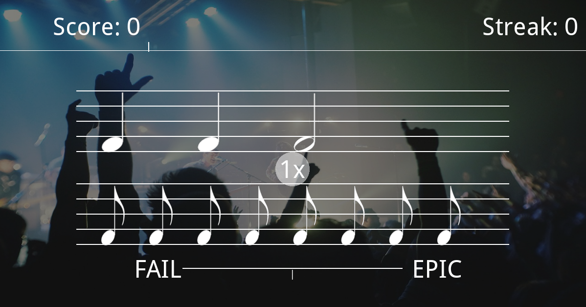

RhythmTrain
RhythmTrain is an open-source sight-reading trainer app designed to help users learn and improve their classic western music notation reading abilities. It is the platform I’m using to run my master’s experiment to observe the effects of leaderboards on engagement on gamified platforms.
The project was started by me last year for my undergraduate studies and was originally programmed in Python using the Kivy graphics library for mobile. The library was cumbersome and difficult to develop with but being python based, afforded us the ability to run beat detection algorithms and had support for MP3 playback, something missing from other open-source alternatives. The original idea was to have the game detect the beats in a users own music collection and display random rhythms, but due to the inaccuracy of these techniques, we opted for a less dynamic approach. It was still possible to add a user’s own songs to the game, but adding these required users to either map the beats to the song, or choose songs that had a static tempo with the application then creating the beats. The original prototype can be seen in the image below.
For my masters, it was decided to recreate the project in a more suitable environment. We opted for Godot as it had come a long way since my initial analysis of platforms a year prior and now had mp3 support. I worked closely with an undergraduate student who began work on building the software for his dissertation, while I designed the application, started researching and designed the experiment that would surround the app.
The undergraduate has since finished his dissertation and provided me a fantastic base to work on. I have since taken over primary development with a focus on polish, game features, building the database and integrating the game with a REST api. We’ve opted to use Supabase to store our data (an open-source firebase alternative) with the systems for this interaction being built by me. For a comprehensive list of the features I’ve worked on, please see the Gitlab below, the application is open-source so feel free to poke around in the code and maybe compile it for yourself!
Links to Repositories
- RhythmTrain Godot (latest work is in develop-supabase branch): https://gitlab.com/HaMM4R/RhythmTrainGodot/-/tree/develop-supabase
- RhythmTrain Kivy: https://github.com/HaMM4R/SightRead